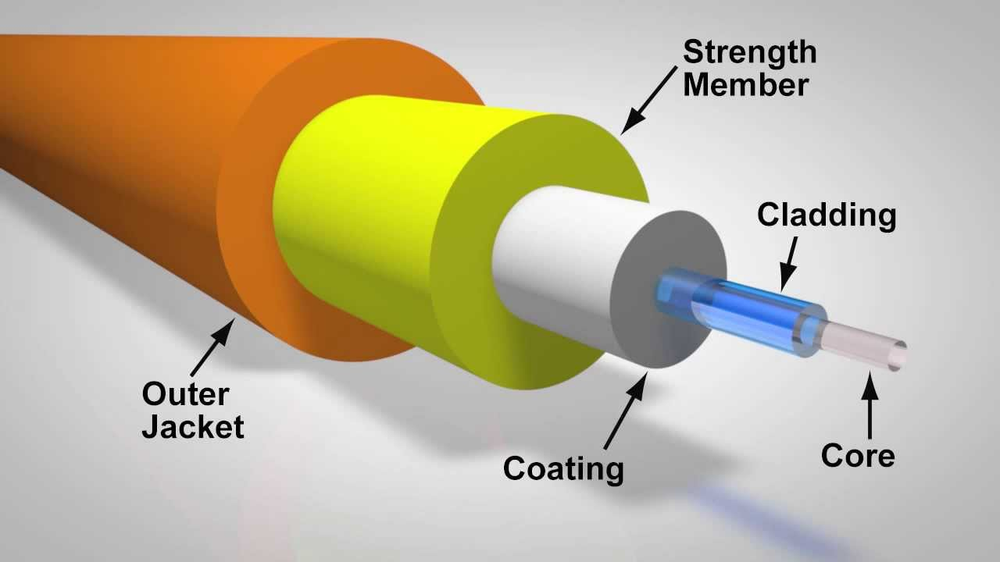

Fiber Optic ဆိုတာဘာလဲ?
Fiber Optic (အလင်းဖြင့် Data ပို့ဆောင်သည့် နည်းပညာ) ဆိုတာ Data နဲ့ Information တွေကို Light Signal (အလင်းအချက်ပြမှု) အသုံးပြုပြီး အကွာအဝေးတစ်ခုကနေ တစ်ခုကို မြန်မြန်ဆန်ဆန် ပို့ဆောင်ပေးနိုင်တဲ့ Communication Technology (ဆက်သွယ်ရေးနည်းပညာ) တစ်ခု ဖြစ်ပါတယ်။
Fiber Optic Cable (အလင်းဖြင့် Data ပို့ဆောင်သော Cable) ထဲမှာ အလွန်သေးငယ်တဲ့ Glass Fiber (ဖန်သား Fiber) သို့မဟုတ် Plastic Fiber (ပလတ်စတစ် Fiber) တွေ ပါဝင်ပါတယ်။
Fiber Optic = Data + Light + Optical Fiber
Copper Cable (ကြေးနန်း Cable) က Electrical Signal (လျှပ်စစ်အချက်ပြမှု) ကို အသုံးပြုသလို Fiber Optic ကတော့ Light Signal (အလင်းအချက်ပြမှု) ကို အသုံးပြုပါတယ်။
Fiber Optic ဘယ်လိုအလုပ်လုပ်သလဲ?
Network Equipment (Network ဆိုင်ရာကိရိယာ) က ပေးပို့ချင်တဲ့ Data ကို Optical Signal (အလင်းအချက်ပြမှု) အဖြစ် ပြောင်းလဲပေးပါတယ်။
အဲဒီ Light Signal က Fiber ရဲ့ Core (အလင်းဖြတ်သန်းသွားသော အတွင်းပိုင်း) ထဲကနေ ဖြတ်သန်းပြီး အခြားတစ်ဖက်ကို ရောက်ရှိသွားပါတယ်။
Fiber အတွင်းမှာ Light က Total Internal Reflection (အလင်းအတွင်းပိုင်း ပြန်လည်ရောင်ပြန်ခြင်း) ဆိုတဲ့ Principle ကို အသုံးပြုပြီး Core အတွင်းမှာ ဆက်လက်သွားလာပါတယ်။
လက်ခံတဲ့ဘက်ကို ရောက်တဲ့အခါ Optical Receiver (အလင်း Signal လက်ခံကိရိယာ) က Light Signal ကို Network Equipment အသုံးပြုနိုင်တဲ့ Electrical / Digital Signal (လျှပ်စစ် / Digital အချက်ပြမှု) အဖြစ် ပြန်လည်ပြောင်းပေးပါတယ်။
Optical Fiber ရဲ့ အဓိကအစိတ်အပိုင်းများ

-
🔵 Core
(အလင်းဖြတ်သန်းသွားသော အတွင်းပိုင်း)
Core က Fiber ရဲ့ အလယ်ဗဟိုမှာရှိတဲ့ အဓိကအပိုင်းဖြစ်ပါတယ်။ Data ကို ကိုယ်စားပြုတဲ့ Light Signal တွေဟာ Core ထဲကနေ ဖြတ်သန်းသွားပါတယ်။
-
🟣 Cladding
(အလင်းကို Core အတွင်း ထိန်းပေးသော အလွှာ)
Cladding က Core ကို ပတ်ထားတဲ့ Glass Layer (ဖန်သားအလွှာ) ဖြစ်ပါတယ်။ Core နဲ့ Cladding ရဲ့ Refractive Index (အလင်းယိုင်ညွှန်းကိန်း) ကွာခြားမှုကြောင့် Light Signal ကို Core အတွင်းမှာ ထိန်းသိမ်းပေးနိုင်ပါတယ်။
-
🛡️ Coating
(Fiber ကို ကာကွယ်ပေးသော အပြင်အလွှာ)
Coating က Glass Fiber ကို Mechanical Damage (ရုပ်ပိုင်းဆိုင်ရာ ထိခိုက်မှု)၊ Moisture (အစိုဓာတ်) နဲ့ အခြားပတ်ဝန်းကျင်ဆိုင်ရာ ထိခိုက်မှုတွေကနေ ကာကွယ်ပေးပါတယ်။
Light Signal ဘာကြောင့်အသုံးပြုတာလဲ?
Fiber Optic မှာ Light ကို အသုံးပြုရတဲ့ အဓိကအကြောင်းရင်းက Light Signal ဟာ Data ကို အကွာအဝေးရှည်ရှည် ပို့ဆောင်နိုင်လို့ ဖြစ်ပါတယ်။
ထို့အပြင် Fiber Optic ဟာ Electrical Interference (လျှပ်စစ်အနှောင့်အယှက်) ကို အလွန်ခံနိုင်ရည်ရှိတာကြောင့် Electrical Noise (လျှပ်စစ်ဆူညံသံ) များတဲ့နေရာတွေမှာလည်း အသုံးပြုနိုင်ပါတယ်။
Fiber Optic အမျိုးအစားများ
Fiber Optic ကို အဓိကအားဖြင့် Single Mode Fiber (SMF) နဲ့ Multimode Fiber (MMF) ဆိုပြီး နှစ်မျိုးခွဲနိုင်ပါတယ်။
| အမျိုးအစား | အဓိကအသုံးပြုမှု | အကွာအဝေး |
|---|---|---|
| Single Mode Fiber (SMF) | Long Distance Network | အကွာအဝေးရှည် |
| Multimode Fiber (MMF) | Data Center / LAN | အကွာအဝေးတို |
Fiber Optic ရဲ့ အားသာချက်များ
- High Bandwidth (Data ပမာဏများစွာ ပို့နိုင်ခြင်း)
- Low Attenuation (Signal အားလျော့မှု နည်းခြင်း)
- Long Distance (အကွာအဝေးရှည် ပို့ဆောင်နိုင်ခြင်း)
- EMI Immunity (လျှပ်စစ်အနှောင့်အယှက်ကို ခံနိုင်ခြင်း)
- High Speed (မြန်နှုန်းမြင့် Data Transmission)
- Lightweight (အလေးချိန်ပေါ့ပါးခြင်း)
Fiber Optic ကို ဘယ်နေရာတွေမှာ အသုံးပြုသလဲ?
ယနေ့ခေတ် Communication Network (ဆက်သွယ်ရေးကွန်ယက်) တွေမှာ Fiber Optic ကို နေရာအများအပြားမှာ အသုံးပြုနေကြပါတယ်။
- FTTH (အိမ်သုံး Fiber Internet)
- Telecom Network (ဆက်သွယ်ရေးကွန်ယက်)
- Internet Backbone (အင်တာနက် အဓိကကွန်ယက်)
- Data Center (Data သိမ်းဆည်း/စီမံသည့်စင်တာ)
- Enterprise Network (လုပ်ငန်းသုံး Network)
- CCTV Network (ကင်မရာကွန်ယက်)
- Long Distance Communication (အကွာအဝေးရှည် ဆက်သွယ်ရေး)
Beginner အတွက် သိထားသင့်တဲ့ Technical Terms
| Technical Term | အဓိပ္ပါယ် |
|---|---|
| Core | Light Signal ဖြတ်သန်းသွားတဲ့ အတွင်းပိုင်း |
| Cladding | Light ကို Core အတွင်း ထိန်းပေးတဲ့ အလွှာ |
| Coating | Fiber ကို ကာကွယ်ပေးတဲ့ အပြင်အလွှာ |
| Attenuation | Signal အားလျော့ခြင်း |
| Bandwidth | Data ပို့ဆောင်နိုင်တဲ့ ပမာဏ |
| Wavelength | Light Wave ရဲ့ လှိုင်းအလျား |
| Optical Power | Optical Signal ရဲ့ အလင်းစွမ်းအား |
| Splice | Fiber နှစ်ချောင်းကို ပေါင်းဆက်ခြင်း |
Fiber Optic ရဲ့ အခြေခံကို နားလည်ချင်ရင်
Core → Light
Cladding → Light ကို ထိန်းပေး
Coating → Fiber ကို ကာကွယ်ပေး
ဒီ Concept သုံးခုကို အရင်ဆုံး သေချာနားလည်ထားဖို့ အရေးကြီးပါတယ်။
Quick Summary
Fiber Optic ဆိုတာ Light Signal ကို အသုံးပြုပြီး Data ကို ပို့ဆောင်တဲ့ Communication Technology ဖြစ်ပါတယ်။
Optical Fiber တစ်ချောင်းမှာ အဓိကအားဖြင့် Core၊ Cladding နဲ့ Coating ဆိုတဲ့ အစိတ်အပိုင်းတွေ ပါဝင်ပါတယ်။
Fiber Optic ဟာ High Bandwidth၊ Low Attenuation နဲ့ Long Distance Transmission စတဲ့ အားသာချက်တွေကြောင့် ယနေ့ခေတ် Internet နဲ့ Communication Network တွေမှာ အလွန်အရေးကြီးတဲ့ Technology တစ်ခု ဖြစ်ပါတယ်။
Fiber Optic Basics ကို နားလည်ပြီးရင်
Single Mode vs Multimode ကို ဆက်လက်လေ့လာနိုင်ပါတယ်။